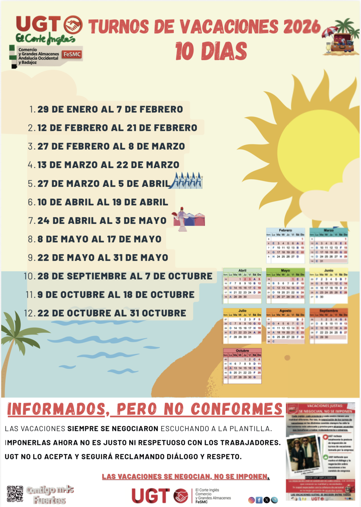

VACACIONES 2026
Ronda de los Tejares
Selecciona el periodo de vacaciones que quieres consultar.
Turnos de vacaciones · 21 días

Turnos de vacaciones · 10 días

Ronda de los Tejares
Selecciona el periodo de vacaciones que quieres consultar.
